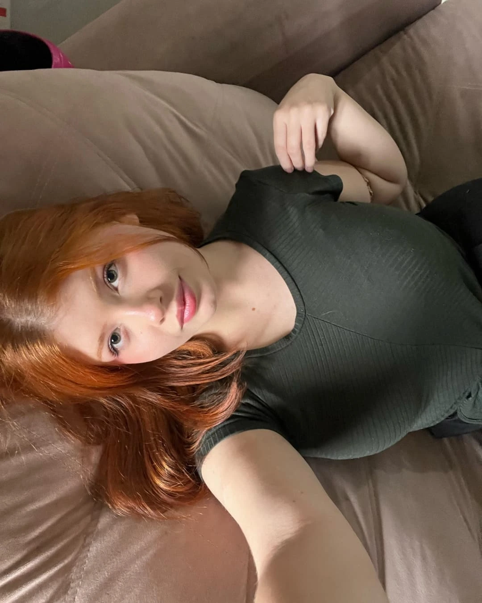
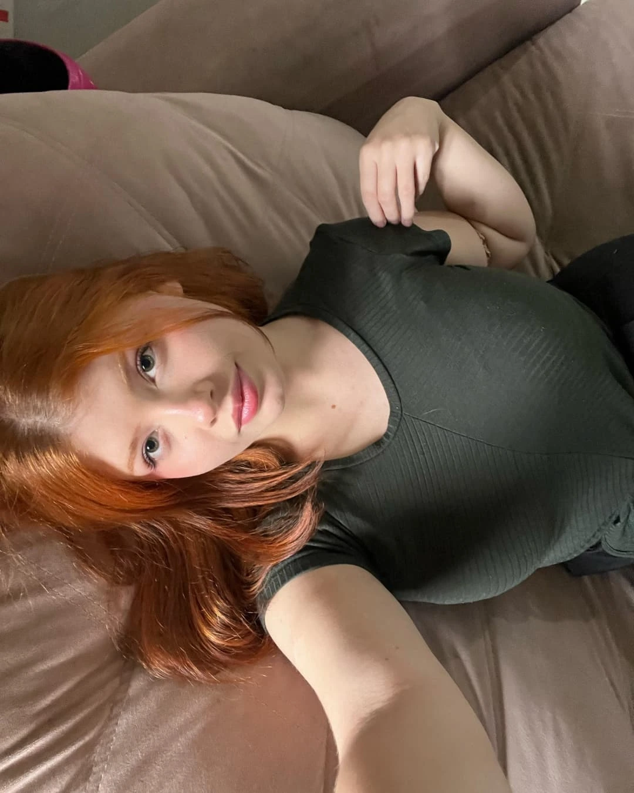

Flavia Neves ❤️
 ÂSe você um dia voltar aqui….
 ÂTem vezes que eu nem sei direito o que tá acontecendo, mas mesmo assim continuo aqui, por você.  Porque amar você não é só sobre os dias bons — é sobre os estranhos também.
 ÂSobre quando a gente ri numa call à noite, e no dia seguinte parece que o mundo virou. Eu fico tentando entender… mas à s vezes só quero que você saiba que mesmo sem entender, eu fico. Fico porque eu te amo.
 ÂPorque quando se trata de você, não existe meio termo pra mim. Eu tô aqui, mesmo que você não perceba.
 ÂSe um dia você voltar aqui, só queria que soubesse: tudo isso é real. Cada palavra, cada gesto, cada plano, cada sonho. Você é — uma das partes mais bonitas que já existiram em mim.:
 ÂMesmo quando você se fecha, mesmo quando me responde de qualquer jeito. E talvez eu não saiba lidar com tudo da melhor forma, mas meu coração tá sempre na intenção certa: a de cuidar de você. Com Amor, Rafael Gavloski.. EU TE AMO minha baixinha ❤️
 Â  
   Â
 
     Â
 Â
   Â
      🶠Nenhuma música tocando  Â